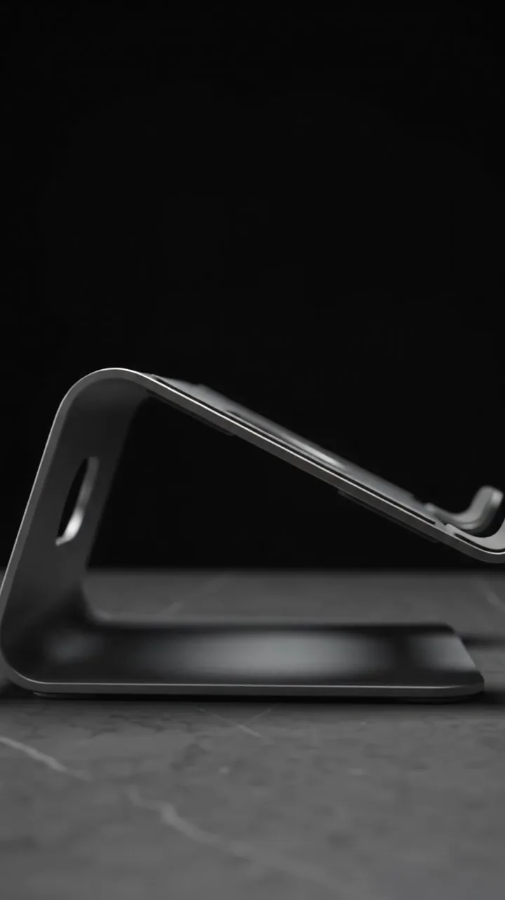
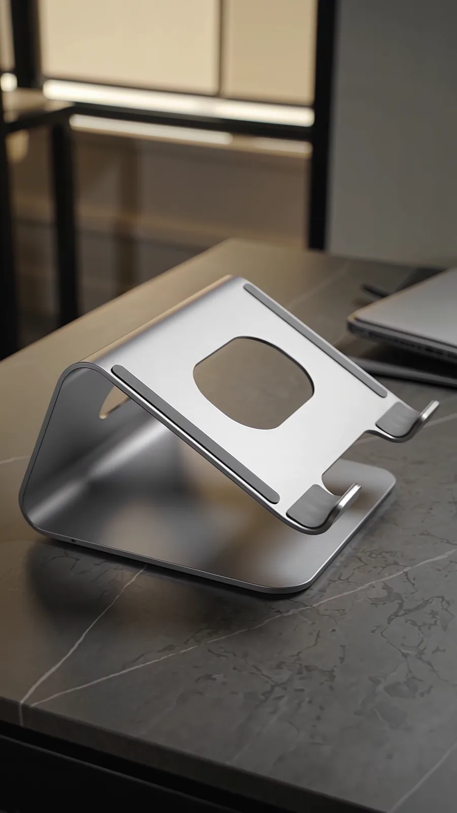

Cible principale
Étudiants
ENSA et autres établissements supérieurs
Portable laptop stand
Confort, productivité et design. Le support idéal pour vos études.
StudyStand est un support d'ordinateur portable pliable, léger et compact, conçu pour améliorer le confort d'utilisation et faciliter le transport au quotidien.
Les étudiants utilisent fréquemment leurs ordinateurs,
mais font face à une mauvaise posture car l'écran est souvent trop bas.
De plus, les supports existants sont coûteux, encombrants et difficiles à transporter entre la maison et l'université,
ce qui ne convient pas au budget étudiant.
Solution proposée
La solution est un support pliable, compact et facile à transporter dans un sac. Il sera doté d'une structure légère et stable, de patins antidérapants et, si possible, d'une hauteur réglable, le tout fabriqué avec des matériaux résistants.

Un pliage très compact. Il se glisse dans un sac, de la maison à l'université.
Plusieurs angles de vision, sur une structure légère et stable.
Montez l'écran jusqu'à la ligne de vos yeux.
Caractère innovant et différenciation
Pour se démarquer de la concurrence, StudyStand ne compte pas uniquement sur le fait d'être pliable.
Son innovation repose sur
La cible principale est constituée des étudiants, notamment ceux de l'ENSA et d'autres établissements supérieurs. La cible secondaire regroupe les lycéens, les jeunes professionnels et les personnes travaillant en mobilité.
Cible principale
ENSA et autres établissements supérieurs
Cible secondaire
Les révisions et le bac, sur ordinateur
Cible secondaire
Jeunes professionnels
Cible secondaire
Personnes travaillant en mobilité
Avant le lancement, une enquête sera menée auprès des étudiants pour valider le besoin réel et le prix acceptable.
Le modèle repose sur la vente directe d'un produit physique via précommandes, stands et réseaux sociaux. À titre indicatif, le coût de fabrication est estimé à 60 DH et le prix de vente à 100 DH.
Marge brute estimée 40 DH par unité
Avant le lancement, une enquête sera menée auprès des étudiants pour valider le besoin réel et le prix acceptable. Une étude de la concurrence sera également effectuée pour comparer le prix, le poids, la stabilité et le niveau de réglage des produits existants.
La stratégie inclut la création d'une identité visuelle simple (nom, logo, slogan) et la publication de photos et vidéos de démonstration sur les réseaux sociaux étudiants. Une offre de lancement en précommande sera proposée, suivie d'améliorations basées sur les avis des premiers utilisateurs.
StudyStand se distingue par son format compact, sa simplicité et son adaptation aux besoins des étudiants. Le projet offre des opportunités de croissance grâce à la personnalisation et à la vente directe, malgré certains défis liés à la concurrence, aux coûts de fabrication et aux produits importés à bas prix.
Format compact, simplicité, adaptation aux besoins des étudiants.
Les coûts de fabrication.
La personnalisation et la vente directe.
La concurrence et les produits importés à bas prix.
La faisabilité commerciale de StudyStand dépend de trois éléments : l'existence d'un besoin réel, une différenciation claire et des coûts de fabrication compatibles avec le budget des étudiants.
